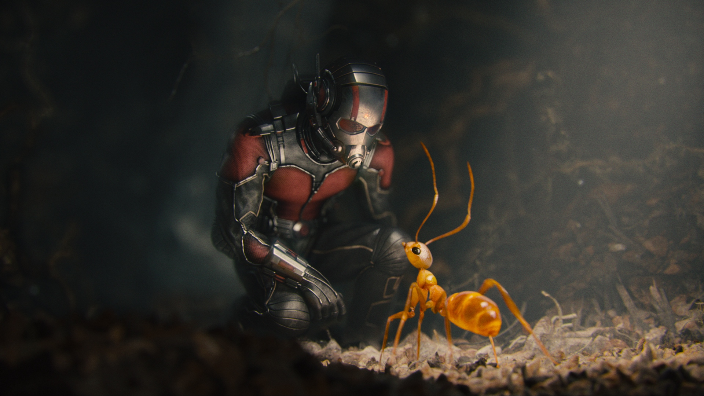
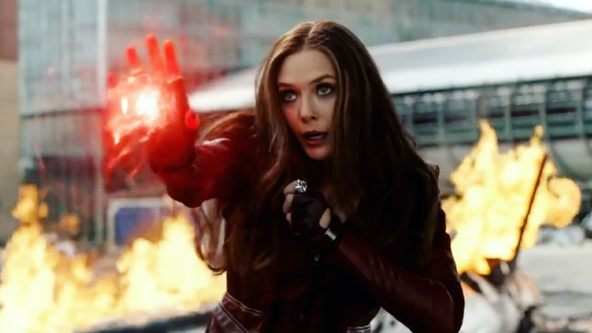
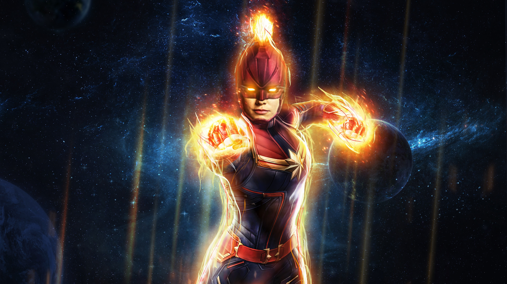

T'Challa is the another name of Black Panther , In "Civil war" Black Panther was first time seen in this film he has not better suit than now high-tech suit , he is then king of Wakanda . Wakanda has vibranium in whole world vibranium is only in Wakanda , captain America's first and second shield is made with this , they also upated bucky's one hand . He has a sister her name is Shuri , Is genious in vibranium research
Ant-man/Scott Lang

Ant-man is most intresting hero because he has the power to do itself small and big(in small he is like Ant size and in big he is like tonny stark tower)
Also he has the power of all ants everywhere and he is the leader of all ants , he can do anything with ants ........................
and later , now he has a partner name wasp . Ant-man has also a daughter
Wasp/hope phym
Wasp is the daughter of hank phym and in 2nd picture hope get a wasp suit from his father .
she is the partner of Ant-man she can fly in small size but Ant-man can not fly but she can't very big in size and she's suit has more advanced feature than Ant-man.
The Wasp has many abilities that make her different from the Ant-Man. One of her key strengths is the ability to grow a pair of translucent wings when she shrinks in size.
Using this pair of wings, the Wasp can fly at great speeds.Another superpower which she inherited from her mother is her stinging abilities aptly named as Wasp Stings.
Hwakeye/Clint Bartin
Hwakeye is not in more pictures of marvel . His another name is agent bartin or clint
he is ghanordar , his best friend is Black Widow right form his training . He is the agent of S.H.I.E.L.D
Black Widow/Natasha Romanoff
Black widow is the agent of S.H.I.E.L.D his another name is agent Natasha Romanoff . she's best friend is hawkeye or name clint Bartin , she is with form training of S.H.I.E.L.D
. In past she was a thief
Vonda/Scarlet Witch

Vonda is a girl , she has magic power , she can control anything that she want .
She is in love with Vision . She has a brother name Quick sliver but in AGE OF ULTRON his death .
In INFINTY war part-2 (I think he will be back with time stone)
Guardians of the galaxy
1.In this team there is a groot he has unlimited woodland
2.gamora she is the daughter of thanos she has photosynthesis that's why she is green
3.Quill or satr lord he is devyapurus ,he can do anything.
4.then drax is a half mad warrior
5.rocket is a indian lomdi he has great mind in atomic bomb making,but he talk like half mind
6.Mantis is a girl she can do anything with his think for example she can sleep
anybody with his thing
7.Yondu is from first picture he is the kepper of star lord and also a thief fighter king
8.Nebula is the sister of Gamora she's some body is made from robotic parts first time she would kill
gamora but in last she is with them
Winter soldier/James Barm
Winter soldiers is the best friend of captain America and he is with from childhood ,
first he is with army later it came to die then hydra officer came and save her life with changing the one hand of her, his real name is james bukane barm (bucky)
,the civil war was done with Captain and his friendship . He is 103 years Old
Vision
Vision was created by tonny stark and Bruce banner , first time created then he was failed and villian is born name Ultron , Before he lives in luki chadi.
In his head infinty stone is sticked with this he can change his body and throw laser from it. He is a super living computer
War machine/James Rhodes
War machine was created by tony stark(Iron-man) then one of his best friend James Rhodes (Roddy) had stole and upgrade in the hammer industries which was actually a villian of Iron-man 2 . War machine was in maximum movies of Marvel and this suit has many guns , bombs and equipments that's why it is called War Machine . It is also called "Iron protait" after saving the city in "Iron Man 2".
Miss Marvel
About Miss Marvel has no information because his picture is not released
Iron Fist
Iron fist is the upcoming hero . Mostly he is seen Comics and not more information about him , becuase his picture is not released
Captain Marvel

Captain Marvel is a girl . she is upcoming hero and she has more power than all (I think) . and in Infinity War part-2 she will come
Shuri
Shuri is the sister of black panther (t-challa) . She has more mind in Sci-Tech as compared to tonny stark , she has more mind . She had made intersting equipments and weapons with vibranium
for example the new of suit of black panther was made by her , also she can repair the humans with vibranium . and also she is princess a of wakanda
Falcon/Sam Wilson
Falcon has been loyal to Steve Rogers ever since they met in Captain America: The Winter Soldier,
so it was no surprise to see the winged hero fight by the Star Spangled Avenger's side in Captain America: Civil War. Now that Sam Wilson is no longer imprisoned on The Raft,
it's likely he's continuing to fight the good fight with Captain America in secret , but you can count on Sam busting out his wings and bluewing drone to battle Thanos' minions.
Nick Fury
Even though he's no longer S.H.I.E.L.D's director , Nick Fury has been continuing his spy activities following Captain America: The Winter Soldier.
He reemerged in Avengers: Age of Ultron to help evacuate Sokovia, but his where about since then haven't been revealed.
Hopefully Avengers: Infinity War will shed light on what he's been up to, but at the very least, it will be good to see him reunited with the superhero group he recruited years ago.
Nakia
Nakia is the love partner of t'challa (black Panther) and she is the sister of okoye . she is also a spy
Wong
Wong is the keeper of magic library in Docter Strange . He also know magic but not more than docter strangeand in last he fights with Kaicereious . he also fight in Infinity War
with thanos son and break the hand (hafly)
MARIA HILL
After S.H.I.E.L.D. fell apart (well, on the big screen, at least), Maria Hill went to work for Tony Stark, and she was seen aiding Earth's Mightiest Heroes in Avengers: Age of Ultron.Despite helping set up the team's new base in New York, Maria was nowhere to be see in Captain America: Civil War, so it's unclear if she's still working with them, focusing solely on Stark Industries business or is operating elsewhere. In any case, her secret agent skills may prove valuable during the big event.
M'baku
M'baku is similar with Black Panther (T'Challa) Tribe , many years ago M'baku tribes or forefathers was gone to other place , M'baku has save life of Black Panther (T'Challa) and fight with killmonger for T'Challa from this T'Challa join M'baku tribes and give vibranium to M'baku's army and people . He also fight in "Infinity War" with Black Panther
Nova
When the last surviving member of the planet Xandar's elite Nova Corps, Rhomann Dey, is dying, he selects New York high school student Richard Rider to replace him . Rider is given the uniform and powers of a Nova Centurion but little instruction on how to use them. Calling himself Nova, Rider becomes a superhero, fighting costumed super villains such as Condor, Powerhouse, Diamondhead , the Corruptor , and the Sphinx , and teaming with heroes such as Spider-Man and Thor. He initially hides his identity, but later reveals it to his family .